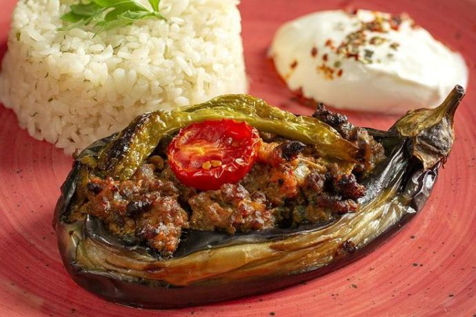

RECIPE BOOK
Karnıyarık Recipe

Karnıyarık is an eggplant dish from Turkiye.
Ingredients:
- Eggplant
- Ground Beef
- Onions and Garlic
- Green Pepper
- Tomatoes
- Tomato Paste
- Salt, Pepper and/or any other spice..
Instructions:
- Peel the eggplants (Leave some stripes)
- Cut a slit in the middle of eggplants and place the eggplants inside salty water to get rid of bitterness. (approx. 30 min.)
- Prepare the filling. Saute Onion -> Garlic -> Ground Beef -> Pepper, Tomatoes and Tomato Paste, Salt Pepper.
- Fry the eggplants in oil untill brown.
- Fill the eggplants, put them on a tray with some water and bake 30 mins. Afiyet olsun.